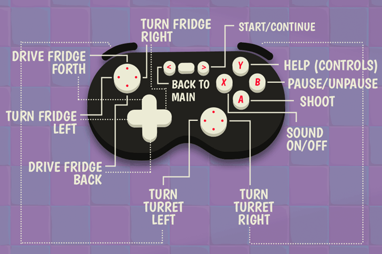
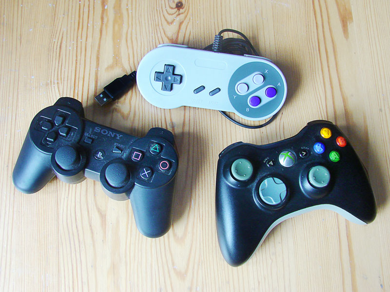
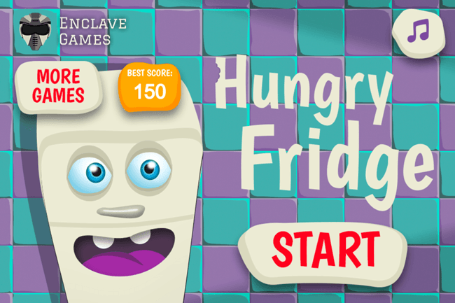
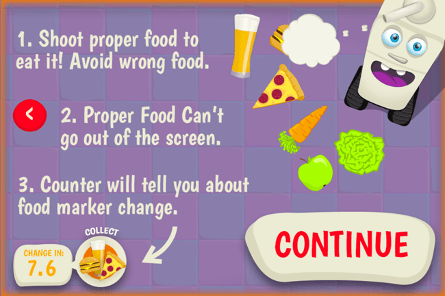
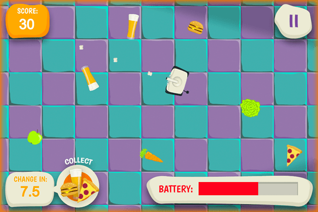
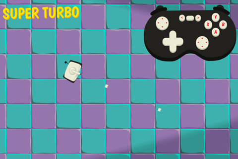
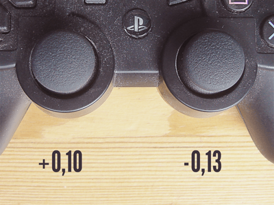

This article looks at implementing an effective, cross browser control system for web games using the Gamepad API, allowing you to control your web games using console game controllers. It features a case study game — Hungry Fridge, created by Enclave Games.
Controls for web games
Historically playing games on a console connected to your TV was always a totally different experience to gaming on the PC, mostly because of the unique controls. Eventually extra drivers and plugins allowed us to use console gamepads with desktop games — either native games or those running in the browser. Now in the era of HTML5 we finally have the Gamepad API, which gives us the ability to play browser-based games using gamepad controllers without any plugins. The Gamepad API achieves this by providing an interface exposing button presses and axis changes that can be used inside JavaScript code to handle the input. These are good times for browser gaming.

API status and browser support
The Gamepad API is still at Working Draft stage in the W3C process, which means its implementation might still change, but saying that the browser support is already quite good. Firefox 29+ and Chrome 35+ support it out of the box. Opera supports the API in version 22+ (not surprising given that they now use Chrome's Blink engine.) And Microsoft implemented support for the API in Edge recently, which means four main browsers now supporting the Gamepad API.
Which gamepads are best?

The most popular gamepads right now are those from the XBox 360, XBox One, PS3 and PS4 — they have been heavily tested and work well with the Gamepad API implementation in browsers across Windows and Mac OS X.
There's also a number of other devices with various different button layouts that more or less work across browser implementations. The code discussed in this article was tested with a few gamepads, but the author's favourite configuration is a wireless XBox 360 controller and the Firefox browser on Mac OS X.
Case Study: Hungry Fridge
The GitHub Game Off II competition ran in November 2013 and Enclave Games decided to take part in it. The theme for the competition was "change", so they submitted a game where you have to feed the Hungry Fridge by tapping the healthy food (apples, carrots, lettuces) and avoid the "bad" food (beer, burgers, pizza.) A countdown changes the type of food the Fridge wants to eat every few seconds, so you have to be careful and act quick. You can try Hungry Fridge here.

The second, hidden "change" implementation is the ability to transform the static Fridge into a full-blown moving, shooting and eating machine. When you connect the controller, the game significantly changes (Hungry Fridge turns into the Super Turbo Hungry Fridge) and you're able to control the armoured fridge using the Gamepad API. You have to shoot down the food, but once again you also have to find the type of food the Fridge wants to eat at each point, or else you'll lose energy.

The game encapsulates two totally different types of "change" — good food versus bad food, and mobile versus desktop.

Demo
The full version of the Hungry Fridge game was built first, and then to showcase the Gamepad API in action and show the JavaScript source code, a simple demo was created. It's part of the Gamepad API Content Kit available on GitHub where you can dive deep into the code and study exactly how it works.

The code explained below is from the full version of the Hungry Fridge game, but it's almost identical to the one from the demo — the only difference is that the full version uses the turbo variable to decide whether or not the game will be launched using Super Turbo mode. It works independently, so it could be turned on even if the gamepad is not connected.
Note: Easter Egg time: There's a hidden option to launch Super Turbo Hungry Fridge on the desktop without having a gamepad connected — click the gamepad icon in the top right corner of the screen. It will launch the game in the Super Turbo mode and you'll be able to control the Fridge with the keyboard: A and D for turning the turret left and right, W for shooting and arrow keys for movement.
Implementation
There are two important events to use along with the Gamepad API — gamepadconnected and gamepaddisconnected. The first one is fired when the browser detects connection of a new gamepad while the second one is fired when a gamepad is disconnected (either physically by the user or due to inactivity.) In the demo, the gamepadAPI object is used to store everything related to the API:
var gamepadAPI = {
controller: {},
turbo: false,
connect: function() {},
disconnect: function() {},
update: function() {},
buttonPressed: function() {},
buttons: [],
buttonsCache: [],
buttonsStatus: [],
axesStatus: []
};The buttons array contains the XBox 360 button layout:
buttons: [
'DPad-Up','DPad-Down','DPad-Left','DPad-Right',
'Start','Back','Axis-Left','Axis-Right',
'LB','RB','Power','A','B','X','Y',
],This can be different for other types of gamepads like the PS3 controller (or a no-name, generic one), so you have to be careful and not just assume the button you're expecting will be the same button you'll actually get. Next we set up two event listeners to get the data:
window.addEventListener("gamepadconnected", gamepadAPI.connect);
window.addEventListener("gamepaddisconnected", gamepadAPI.disconnect);Due to security policy, you have to interact with the controller first while the page is visible for the event to fire. If the API worked without any interaction from the user it could be used to fingerprint them without their knowledge.
Both functions are fairly simple:
connect: function(evt) {
gamepadAPI.controller = evt.gamepad;
gamepadAPI.turbo = true;
console.log('Gamepad connected.');
},The connect() function takes the event as a parameter and assigns the gamepad object to the gamepadAPI.controller variable. We are using only one gamepad for this game, so it's a single object instead of an array of gamepads. We then set the turbo property to true. (We could use the gamepad.connected boolean for this purpose, but we wanted to have a separate variable for turning on Turbo mode without needing to have a gamepad connected, for reasons explained above.)
disconnect: function(evt) {
gamepadAPI.turbo = false;
delete gamepadAPI.controller;
console.log('Gamepad disconnected.');
},The disconnect function sets the gamepad.turbo property to false and removes the variable containing the gamepad object.
Gamepad object
There's lots of useful information contained in the gamepad object, with the states of buttons and axes being the most important:
id: A string containing information about the controller.index: A unique indentifier for the connected device.connected: A boolean variable,trueif the device is connected.mapping: The layout type of the buttons;standardis the only available option for now.axes: The state of each axis, represented by an array of floating point values.buttons: The state of each button, represented by an array ofGamepadButtonobjects containingpressedandvalueproperties.
The index variable is useful if we're connecting more than one controller and want to identify them to act accordingly — for example when we have a two player game requiring two devices to be connected.
Querying the gamepad object
Beside connect() and disconnect(), there are two more methods in the gamepadAPI object: update() and buttonPressed(). update() is executed on every frame inside the game loop, to update the actual status of the gamepad object regularly:
update: function() {
// clear the buttons cache
gamepadAPI.buttonsCache = [];
// move the buttons status from the previous frame to the cache
for(var k=0; k<gamepadAPI.buttonsStatus.length; k++) {
gamepadAPI.buttonsCache[k] = gamepadAPI.buttonsStatus[k];
}
// clear the buttons status
gamepadAPI.buttonsStatus = [];
// get the gamepad object
var c = gamepadAPI.controller || {};
// loop through buttons and push the pressed ones to the array
var pressed = [];
if(c.buttons) {
for(var b=0,t=c.buttons.length; b<t; b++) {
if(c.buttons[b].pressed) {
pressed.push(gamepadAPI.buttons[b]);
}
}
}
// loop through axes and push their values to the array
var axes = [];
if(c.axes) {
for(var a=0,x=c.axes.length; a<x; a++) {
axes.push(c.axes[a].toFixed(2));
}
}
// assign received values
gamepadAPI.axesStatus = axes;
gamepadAPI.buttonsStatus = pressed;
// return buttons for debugging purposes
return pressed;
},On every frame, update() saves buttons pressed during the previous frame to the buttonsCache array and takes fresh ones from the gamepadAPI.controller object. Then it loops through buttons and axes to get their actual states and values.
Detecting button presses
The buttonPressed() method is also placed in the main game loop to listen for button presses. It takes two parameters — the button we want to listen to and the (optional) way to tell the game that holding the button is accepted. Without it you'd have to release the button and press it again to have the desired effect.
buttonPressed: function(button, hold) {
var newPress = false;
// loop through pressed buttons
for(var i=0,s=gamepadAPI.buttonsStatus.length; i<s; i++) {
// if we found the button we're looking for...
if(gamepadAPI.buttonsStatus[i] == button) {
// set the boolean variable to true
newPress = true;
// if we want to check the single press
if(!hold) {
// loop through the cached states from the previous frame
for(var j=0,p=gamepadAPI.buttonsCache.length; j<p; j++) {
// if the button was already pressed, ignore new press
if(gamepadAPI.buttonsCache[j] == button) {
newPress = false;
}
}
}
}
}
return newPress;
},There are two types of action to consider for a button: a single press and a hold. The newPress boolean variable will indicate whether there's a new press of a button or not. Next we loop through the array of pressed buttons — if the given button is the same as the one we're looking for, the newPress variable is set to true. To check if the press is a new one, so the player is not holding the key, we looping through the cached states of the buttons from the previous frame of the game loop. If we find it there it means that the button is being held, so there's no new press. At the end the newPress variable is returned. The buttonPressed function is used in the update loop of the game like this:
if(gamepadAPI.turbo) {
if(gamepadAPI.buttonPressed('A','hold')) {
this.turbo_fire();
}
if(gamepadAPI.buttonPressed('B')) {
this.managePause();
}
}If gamepadAPI.turbo is true and the given buttons are pressed (or held), we execute the proper functions assigned to them. In this case, pressing or holding A will fire the bullet and pressing B will pause the game.
Axis threshold
The buttons have only two states: 0 or 1, but the analog sticks can have many different values — they have a float range between -1 and 1 along both the X and Y axes.

Gamepads can get dusty from lying around inactive, meaning that checking for exact -1 or 1 values can be a problem. For this reason it can be good to set a threshold for the value of the axis to take effect. For example, the Fridge tank will turn right only when the X value is bigger than 0.5:
if(gamepadAPI.axesStatus[0].x > 0.5) {
this.player.angle += 3;
this.turret.angle += 3;
}Even if we move it a little by mistake or the stick doesn't make it back to its original position, the tank won't turn unexpectedly.
Specification update
After more than a year of stability, in April 2015 the W3C Gamepad API spec was updated (see the latest.) It hasn't changed much, but it's good to know whats going on — the updates are as follows.
Getting the gamepads
The Naviagator.getGamepads() method has been updated with a longer explanation and an example piece of code. Now the length of the array of gamepads has to be n+1 where n is the number of connected devices — when there's one device connected and it has the index of 1, the array's length is 2 and it will look like this: [null, [object Gamepad]]. If the device is disconnected or unavailable, the value for it is set to null.
Mapping standard
The mapping type is now an enumerable object instead of a string:
enum GamepadMappingType {
"",
"standard"
};
This enum defines the set of known mappings for a Gamepad. For now there's only the standard layout available, but new ones may appear in the future. If the layout is unknown, it is set to an empty string.
Events
There were more events available in the spec than just gamepadconnected and gamepaddisconnected available, but they were removed from the specification as they were thought to not be very useful. The discussion is still ongoing as to whether they should be put back, and in what form.
Summary
The Gamepad API is very easy to develop with. Now it's easier than ever to deliver console-like experience to the browser without the need of any plugins. You can play the full version of the Hungry Fridge game directly in your browser, install it from the Firefox Marketplace or check the source code of the demo along with all the other resources on the Gamepad API Content Kit.